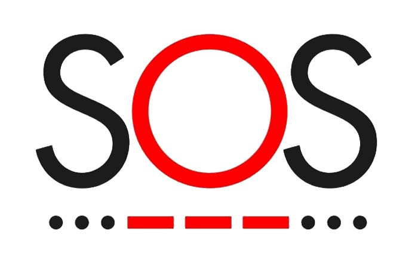

Información sobre Códigos
Código Morse
El Código Morse es un sistema de codificación que utiliza puntos y rayas para representar letras, números y signos de puntuación. Este método puede ser una herramienta valiosa para comunicar mensajes discretos en situaciones de emergencia.
Uso en Situaciones de Violencia Doméstica:
En situaciones de violencia doméstica, el Código Morse puede ser una herramienta útil para enviar mensajes discretos. Puedes usar una luz, un teléfono móvil o una serie de golpes en una superficie para enviar señales en Morse. Asegúrate de que las señales sean claras y reconocibles.
Preparación:
- Practica el Código Morse: Familiarízate con la tabla del Código Morse y practica enviando y recibiendo mensajes.
- Crea una Guía Rápida: Ten a mano una guía rápida con los símbolos del Código Morse para referencia.
- Elige un Método de Comunicación: Decide cómo enviar tus mensajes en Morse (linterna, golpes en una superficie, etc.).
Ejemplo Práctico:
Para enviar una señal de emergencia, puedes usar una linterna para enviar el siguiente mensaje en Morse:
- "SOS":
...---...
Realiza las señales con la linterna o mediante golpes en una superficie de forma clara y consistente.
Ventaja:
Permite enviar mensajes discretos en situaciones en las que no es posible hablar abiertamente.
Desventaja:
Puede requerir práctica y puede ser difícil de interpretar si las señales no son claras.
Recursos de Ayuda
Si tú o alguien que conoces está en una situación de violencia doméstica, es crucial buscar ayuda de inmediato. Aquí te proporcionamos algunos recursos y números de contacto que pueden ofrecerte apoyo y asistencia.
Líneas de Ayuda Nacionales:
- Línea 100: 100
- Centros Emergencia Mujer (CEM): (01) 4197260
- Central Telefónica del MIMP: (01) 626 16008
- Conviértete en una Familia Acogedora: 1810
- Dirección General de Adopciones (Atención por whatsapp): 1985159882
Brinda información, orientación, consejería y soporte emocional en quechua, aimara y castellano para las personas afectadas por hechos de violencia contra las mujeres y los integrantes del grupo familiar o que conozcan un caso.
Son servicios públicos especializados y gratuitos, de atención integral y multidisciplinaria, para víctimas de violencia contra las mujeres y los integrantes del grupo familiar y personas afectadas por violencia sexual. Permite acceder a asesoría legal, contención emocional y apoyo social a nivel nacional. En todo el Perú, los 245 CEM regulares y un CEM en centro de salud (Santa Julia, Piura) atienden de lunes a viernes de 8:00 a. m. a 4:15 p. m., y los 185 CEM en comisarías, las 24 horas del día, los 365 días del año.
Consejos de Seguridad:
- Si estás en peligro inmediato, llama a los servicios de emergencia.
- Busca un lugar seguro para ti y tus hijos si es posible.
- Mantén una lista de contactos de emergencia y recursos disponibles.
Aplicaciones de Seguridad:
Existen aplicaciones móviles que pueden ayudarte a enviar señales de emergencia o alertar a contactos de confianza. Considera instalar una de estas aplicaciones en tu dispositivo móvil.